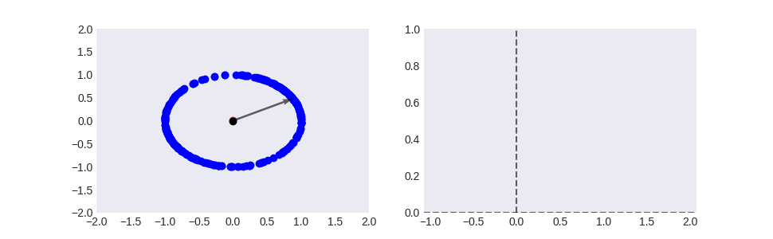

Note
Click here to download the full example code
Subspace PCA (PCA without mean centering)¶
This example plots an animated gif showing how we can perform principle component analysis (PCA) without mean centering and obtain the same eigen vector.
Out:
/home/atom/cvlab/thesis/cvlab_toolbox/examples/plot_subspace_pca.py:108: UserWarning: Matplotlib is currently using agg, which is a non-GUI backend, so cannot show the figure.
plt.show()
import matplotlib as mpl
import matplotlib.animation as animation
import matplotlib.pyplot as plt
import numpy as np
from matplotlib.animation import FuncAnimation
from scipy.constants import golden as g
def dataset_fixed_cov():
'''Generate 1 Gaussians samples with the same covariance matrix'''
n, dim = 300, 2
np.random.seed(0)
C = np.array([[0., -0.3], [0.6, .3]])
X = np.dot(np.random.randn(n, dim), C) + [2., 2.]
return X
def proj_variance(X, vec):
return np.var(X @ vec.T)
def normalize(vec):
return vec / np.linalg.norm(vec)
def is_normalized(vec):
return np.linalg.norm(vec) == 1.
def unit_vector_from_rad(rad):
return np.array([np.cos(rad), np.sin(rad)])
# Generate dataset
X = dataset_fixed_cov()
# Nomralise X
X = np.apply_along_axis(normalize, axis=1, arr=(X-X.mean(axis=0)))
# Calculate the direction that maximises the variance
# with eigen decomposition
eig_vals, eig_vecs = np.linalg.eig(np.cov((X).T))
target_phi = [vec for val, vec in sorted(zip(eig_vals, eig_vecs.T), reverse=True)][0]
# calculate the angle of the target phi
target_rad = np.angle(target_phi[0]+target_phi[1]*1j)
# Predefine the number of time steps
N = 300
# Create N steps to "solve" for target
rads = np.random.normal(loc=0, scale=np.pi, size=N) * np.geomspace(1, 2**-16, num=N) + target_rad
plt.style.use('seaborn-dark')
fig, (ax1, ax2) = plt.subplots(nrows=1, ncols=2, figsize=(g*6, 3))
# Plot the scatters that persists (isn't redrawnstart_deg)
ax1.scatter(*X.T, c='blue', label='Target dataset') # Dataset
ax1.scatter(*X.mean(axis=0), c='red', label='Mean') # Mean
ax1.scatter(*[0,0], c='black', label='Origin') # Origin
ax1.quiver(*[0,0], *target_phi, angles='xy',scale_units='xy', scale=1, linestyle='--', alpha=0.6)
# and init the quiver.
Q = ax1.quiver(*[0,0,0,0], angles='xy',scale_units='xy', scale=1)
ax1.set_xlim(-2,2)
ax1.set_ylim(-2,2)
x_data, y_data = [], []
vl = ax2.axvline(0, 0, 1, linestyle='--', color='black', alpha=0.6)
hl = ax2.axhline(0, 0, 1, linestyle='--', color='black', alpha=0.6)
ln, = ax2.plot(x_data, y_data, 'r.', alpha=0.2)
ax2.set_xlim(target_rad-np.pi/2, target_rad+np.pi/2)
ax2.set_ylim(0, 1)
plots = [ln, Q, vl, hl]
def update_quiver(num, Q, phi, var):
fig.suptitle(f'step {num}')
Q.set_UVC(*phi)
ax1.set_title(f'Eigenvector: x={phi[0]:0.2f}, y={phi[0]:0.2f}')
return Q
def update_scatter(num, ln, var, vl, hl):
global x_data
global y_data
x_data += [num]
y_data += [var]
ln.set_data(x_data, y_data)
vl.set_data(num, [0, 2])
hl.set_data([0, 2], var)
ax2.set_title(f'J = {var:0.4f}')
return ln, vl, hl
def update(num, ln, Q, vl, hl):
phi = unit_vector_from_rad(rads[num])
var = proj_variance(X, phi)
# ln, Q = lnQ
Q = update_quiver(num, Q, phi, var)
ln, vl, hl = update_scatter(rads[num], ln, var, vl, hl)
return [ln, Q, vl, hl],
ani = FuncAnimation(fig, update, fargs=(plots), frames=range(1,N),
interval=20, blit=False)
plt.show()
# ani.save('../docs/_static/pca/subspace_pca.gif', writer='imagemagick', fps=60)
Total running time of the script: ( 0 minutes 0.103 seconds)